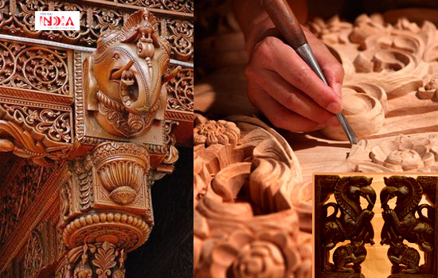

1. Pottery

Pottery is considered to be the most sensual form of all arts. The tradition of handmade pottery is prevailing in India since the time of Harappan Civilisation. North India is also known for various kinds of pottery designs, ranging from colours like orange, brown and light red in Uttar Pradesh to black and dark red in Himachal Pradesh. In Rajasthan, Bikaner is famous for its painted pottery, Pokhran for its pottery with geometrical patterns and Alwar for its Kagzi pottery. The blue pottery of Jaipur is also very famous. The potter occupies a unique position in the craft traditions of India.
2. Woodwork
The northern states of India have a rich tradition of the woodwork. Regions in Punjab are famous for its exquisite wooden furniture. Kashmir is famous for its artefacts made from the walnut trees. The artisans of Chhattisgarh specialise in wooden crafts like masks, doors, window frames and sculptures. Jharkhand is famous for its wooden toys which are always in a pair. The woodcarvings of Goa are an aesthetic blend of Portuguese and Indian cultures, and the designs are primarily floral, animal and human figures.
3. Shell

There are three kinds of shell from which shell handicrafts are made in India - conch shells, tortoiseshell and seashell. Different kinds of goods like bangles, forks, decorative bowls, lockets, curtains, chandeliers, mirror frames, table mats, etc. are the products of shell handicrafts. In general, the places located on the seashore like Gulf of Mannar, Goa, Odisha, etc. are the places for shell handicraft and these art pieces are found in abundance here at a lower price.
4. Brass Handicrafts

Brass is known for its durability, and this feature adds to its advantage when used as handicrafts. Different items made of brass like Lord Ganesha's figure in different postures, vases, tabletops, perforated lamps, ornament boxes, wine glasses, and many more are widely used in many Indian houses even today. These artisans dealing with brass handicrafts are distinctively known as "Kansaris". The manufacturing of brass handicrafts is mainly done in Rajasthan.
5. Bamboo Handicrafts

Handicrafts that are made by using bamboo are the most eco-friendly crafts made in India. The diverse items made from bamboo are baskets, dolls, toys, furniture, mats, wall-hangings, crossbows, jewellery boxes and many more. Bamboo handicrafts are predominantly prepared in West Bengal, Assam and Tripura.
6. Pembarti Sheet Metal Work

This traditional handicraft is a popular metal handicraft made in Pembarthi village of Warangal district in Telangana. Metalworkers or the vishwakarmas perfected the art of sheet metal engravings, and today, it is one of the most popular traditional crafts of India. It can be seen adorning the vigrahas (statues) as well as carvings of chariots in several Hindu temples
7. Paper Mache art

Kashmir’s papier-mâché is a highly stylized and sophisticated combination of craft and fine art from the valley of Kashmir in Jammu & Kashmir. It is an art form that contains many layers and streams within its rich history. Among the European visitors to the region in the 15th century, French shawl traders began to use papier-mâché boxes as packaging for fine Kashmiri shawls. These decorative boxes were highly prized, and were also sold independently in France. It was this trade that introduced the western world to the craft by its French name of papier-mâché
8. Kondapalli Dolls

This 400-year old art form makes toys from soft wood known as tella poniki, where each part is carved separately. These pieces are then joined together with makku, a paste of tamarind seed powder and sawdust. Later after drying, details are added and the toys are coloured with either oil and watercolours or vegetable dyes and enamel paints. These toys are showcased every year at the celebration of Sankranthi, and this showcase is known as Bommala Koluvu.